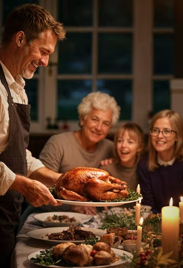

Thanksgiving Day is celebrated every year on the fourth Thursday of November, serving as a reminder of the value of gratitude. It is a day of giving thanks, during which families gather and reflect—with gratitude to God—on the good things that happened throughout the year. Origin: In the 16th century, in Plymouth Colony, Massachusetts, a region called New England, the village inhabitants held a feast to celebrate the harvest of that year’s crops. This was because they had endured very harsh winters. Starting in 1620, after many hardships, the founding pilgrims of the village began to celebrate the good harvest. In 1621, to give thanks again for the harvest, the village governor organized the "Autumn Festival" between the English settlers and Native Americans. This event included a variety of dishes such as corn, fish, ducks, and turkeys. Since then, Thanksgiving Day has become a tradition in the United States and Canada. Other countries that celebrate Thanksgiving are: Grenada (Caribbean), Liberia (Africa), Norfolk Island (Australia), and the Netherlands (Europe). Portugues Ingles  Traditionally, Thanksgiving Day is marked by a dinner featuring roasted turkey, accompanied by other traditional dishes such as mashed potatoes, cranberry sauce, pumpkin pie, stuffing, and vegetables. Portugues Ingles